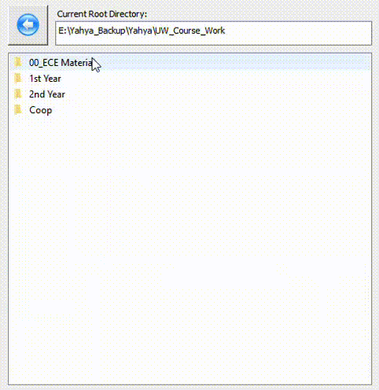

Scanning Drive
The user has the choice to scan any hard disk drive or it's partition(s), external disk drives, or USB drives.
Whichever drive is chosen will have all of it's sub-directories traveresed.

Traversing Directory
Traversing the scanned directory is very similar to the functionality of Windows Explorer, where the user can
traverse each sub-directory.
Color-Coded Legend
The color-coded bar legend shows the the directory items with the largest sizes,
with entry heights proportional to their size.